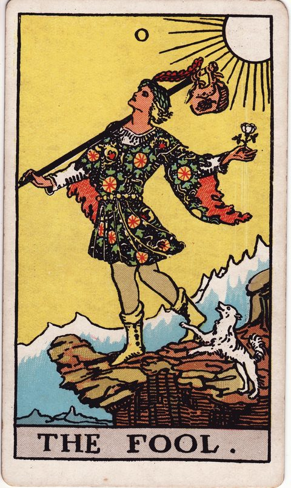

愚者の意味
The Fool

- 分類大アルカナ
- 象徴風／数字0（旅の出発点）
- 正位置新しい一歩・自由・可能性
- 逆位置無計画・軽率・迷い
旅の始まり。何者でもない状態で、何も知らないまま第一歩を踏み出す段階です。
描かれている象徴
断崖の縁を、白いバラを手に軽やかに歩く若者。足元では白い犬が吠え、背の荷物は小さく、頭上には太陽が輝きます。大アルカナの物語「愚者の旅」はこの札から始まります。無邪気さと無防備さが同居する、始まりの象徴です。
正位置の意味
- 新しい一歩
- 自由
- 可能性
先が見えなくても、まず踏み出すことで道が開けます。
進めやすさ：4 / 5（進めやすい）
- 見落としていること
- 完璧な準備を待つうちに、始めるタイミングを逃していませんか。
- 進むときの注意点
- 身軽さは強みですが、撤退ラインだけは先に決めておきましょう。
- 本音（本当はどうしたい？）
- 失敗しても構わないとしたら、どちらへ足が向きますか。
- 手放してよいこと
- 「経験がないから無理」という声は、もう降ろしてもよさそうです。
- 決め手になる違い
- わくわくが不安を上回る方を選ぶと、動き出しやすそうです。
逆位置の意味
- 無計画
- 軽率
- 迷い
勢いだけで動くと足元を見失います。最低限の準備を。
進めやすさ：2 / 5（いまは整える・見直すが先）
- 見落としていること
- 崖の下が見えていないのに、自由さだけを追っていないか。
- 進むときの注意点
- 情報と資金の最低限の確認なしに動くのは避けましょう。
- 本音（本当はどうしたい？）
- 本当に望むのは冒険か、責任からの逃避か、見つめてみて。
- 手放してよいこと
- 「何とかなる」という根拠のない楽観は、今日はここに置いていきましょう。
- 決め手になる違い
- 勢いより、続ける根拠がある方に軍配が上がりそうです。
決断・迷いにおけるヒント
決断の場面での読み方
愚者が出たときは、「準備が整ったら動く」という前提そのものを疑ってみる合図です。転職、引っ越し、新しい学びなど、経験のない領域ほど情報を集めるだけでは不安は消えません。小さく試せる形に分解し、一週間でできる最初の一歩を書き出してみましょう。一方で、崖の縁を歩く姿は無防備さの裏返しでもあります。失っても立て直せる範囲を先に決めておくと、自由さが軽率さに変わるのを防げます。
よくある迷いとの向き合い方
「やってみたいけれど、自分には早すぎる気がする」と足踏みしているとき、このカードは年齢や肩書きより好奇心を基準にしてよいと語りかけます。ただし逆位置なら、逃げたい気持ちを冒険と言い換えていないか一度確かめて。どちらの向きでも、出発の理由を一行で言えるかが決め手になります。
決断前に自分に問いかけたいこと
崖の手前で立ち止まる理由は、危険そのものか、まだ経験がないことへの不安か。失敗しても笑って引き返せる範囲はどこまでか。荷物の小さな袋に入れるとしたら、今回本当に持っていきたいものは何か。
「進めやすさ」は、その選択肢を「いま進める」ときの追い風の強さ。運勢の良し悪しではない。